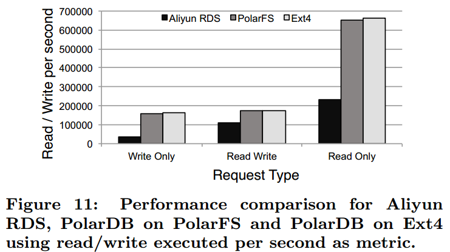

阿里云 PolarDB 及其共享存储 PolarFS 技术实现分析（下）¶
上篇介绍了 PolarDB 数据库及其后端共享存储 PolarFS 系统的基本架构和组成模块，是最基础的部分。本篇重点分析 PolarFS 的数据 IO 流程，元数据更新流程，以及 PolarDB 数据库节点如何适配 PolarFS 这样的共享存储系统。
PolarFS 的数据 IO 操作
写操作
{kind=link}
一般情况下，写操作不会涉及到卷上文件系统的元数据更新，因为在写之前就已经通过 libpfs 的 pfs_posix_fallocate()这个 API 将 Block 预分配给文件，这就避免在读写 IO 路径上出现代价较高的文件系统元数据同步过程。上图是 PolarFS 的写操作流程图，每步操作解释如下：
- POLARDB 通过 libpfs 发送一个写请求 Request1，经由 ring buffer 发送到 PolarSwitch；
- PolarSwitch 根据本地缓存的元数据，将 Request1 发送至对应 Chunk 的 Leader 节点（ChunkServer1）；
- Request1 到达 ChunkServer1 后，节点上的 RDMA NIC 将 Request1 放到一个预分配好的内存 buffer 中，基于 Request1 构造一个请求对象，并将该对象加到请求队列中。一个 IO 轮询线程不断轮询这个请求队列，一旦发现有新请求则立即开始处理；
- IO 处理线程通过异步调用将 Request1 通过 SPDK 写到 Chunk 对应的 WAL 日志块上，同时将请求通过 RDMA 异步发向给 Chunk 的 Follower 节点（ChunkServer2、ChunkServer3）。由于都是异步调用，所以数据传输是并发进行的；
- 当 Request1 请求到达 ChunkServer2、ChunkServer3 后，同样通过 RDMA NIC 将其放到预分配好的内存 buffer 并加入到复制队列中；
- Follower 节点上的 IO 轮询线程被触发，Request1 通过 SPDK 异步地写入该节点的 Chunk 副本对应的 WAL 日志块上；
- 当 Follower 节点的写请求成功后，会在回调函数中通过 RDMA 向 Leader 节点发送一个应答响应；
- Leader 节点收到 ChunkServer2、ChunkServer3 任一节点成功的应答后，即形成 Raft 组的 majority。主节点通过 SPDK 将 Request1 写到请求中指定的数据块上；
- 随后，Leader 节点通过 RDMA NIC 向 PolarSwitch 返回请求处理结果；
- PolarSwitch 标记请求成功并通知上层的 POLARDB。
读请求无需这么复杂的步骤，lipfs 发起的读请求直接通过 PolarSwitch 路由到数据对应 Chunk 的 Leader 节点（ChunkServer1），从其中读取对应的数据返回即可。需要说明的是，在 ChunkServer 上有个子模块叫 IoScheduler，用于保证发生并发读写访问时，读操作能够读到最新的已提交数据。
基于用户态的网络和 IO 路径
在本地 IO 处理上，PolarFS 基于预分配的内存 buffer 来处理请求，将 buffer 中的内容直接使用 SPDK 写入 WAL 日志和数据块中。PolarFS 读写数据基于 SPDK 套件直接通过 DMA 操作硬件设备（SSD 卡）而不是操作系统内核 IO 协议栈，解决了内核 IO 协议栈慢的问题；通过轮询的方式监听硬件设备 IO 完成事件，消除了上下文切换和中断的开销。还可以将 IO 处理线程和 CPU 进行一一映射，每个 IO 处理线程独占 CPU，相互之间处理不同的 IO 请求，绑定不同的 IO 设备硬件队列，一个 IO 请求生命周期从头到尾都在一个线程一颗 CPU 上处理，不需要锁进行互斥。这种技术实现最大化的和高速设备进行性能交互，实现一颗 CPU 达每秒约 20 万次 IO 处理的能力，并且保持线性的扩展能力，也就意味着 4 颗 CPU 可以达到每秒 80 万次 IO 处理的能力，在性能和经济型上远高于内核。
网络也是类似的情况。过去传统的以太网，网卡发一个报文到另一台机器，中间通过一跳交换机，大概需要一百到两百微秒。POLARDB 支持 ROCE 以太网，通过 RDMA 网络，直接将本机的内存写入另一台机器的内存地址，或者从另一台机器的内存读一块数据到本机，中间的通讯协议编解码、重传机制都由 RDMA 网卡来完成，不需要 CPU 参与，使性能获得极大提升，传输一个 4K 大小报文只需要 6、7 微秒的时间。
{kind=link}
如同内核的 IO 协议栈跟不上高速存储设备能力，内核的 TCP/IP 协议栈跟不上高速网络设备能力，也被 POLARDB 的用户态网络协议栈代替。这样就解决了 HDFS 和 Ceph 等目前的分布式文件系统存在的性能差、延迟大的问题。
基于 ParallelRaft 的数据可靠性保证
在 PolarFS 中，位于不同 ChunkServer 上的 3 个 Chunk 数据副本使用改进型 Raft 协议 ParallelRaft 来保障可靠性，通过快速主从切换和 majority 机制确保能够容忍少部分 Chunk 副本离线时仍能够持续提供在线读写服务，即数据的高可用。
在标准的 Raft 协议中，raft 日志是按序被 Follower 节点确认，按序被 Leader 节点提交的。这是因为 Raft 协议不允许出现空洞，一条 raft 日志被提交，意味着它之前的所有 raft 日志都已经被提交。在数据库系统中，对不同数据的并发更新是常态，也正因为这点，才有了事务的组提交技术，但如果引入 Raft 协议，意味着组提交技术在 PolarFS 数据多副本可靠性保障这一层退化为串行提交，对于性能会产生很大影响。通过将多个事务 batch 成一个 raft 日志，通过在一个 Raft Group 的 Leader 和 Follower 间建立多个连接来同时处理多个 raft 日志这两种方式（batching&pipelining）能够缓解性能退化。但 batch 会导致额外延迟，batch 也不能过大。pipelining 由于 Raft 协议的束缚，仍然需要保证按序确认和提交，如果出现由于网络等原因导致前后 pipeline 上的 raft 日志发送往 follow 或回复 leader 时乱序，那么就不可避免得出现等待。
为了进一步优化性能，PolarFS 对 Raft 协议进行了改进。核心思想就是解除按序确认，按序提交的束缚。将其变为乱序确认，乱序提交和乱序应用。首先看看这样做的可行性，假设每个 raft 日志代表一个事务，多个事务能够并行提交说明其不存在冲突，对应到存储层往往意味着没有修改相同的数据，比如事务 T1 修改 File1 的 Block1，事务 T2 修改 File1 的 Block2。显然，先修改 Block1 还是 Block2 对于存储层还是数据库层都没有影响。这真是能够乱序的基础。下图为优化前后的性能表现：
{kind=link}
但 T1 和 T2 都修改了同一个表的数据，导致表的统计信息发生了变化，比如 T1 执行后表中有 10 条记录，T2 执行后变为 15 条（举例而已，不一定正确）。所以，他们都需要更新存储层的相同 BlockX，该更新操作就不能乱序了。
为了解决上述所说的问题，ParallelRaft 协议引入 look behind buffer（LBB）。每个 raft 日志都有个 LBB，缓存了它之前的 N 个 raft 日志所修改的 LBA 信息。LBA 即 Logical Block Address，表示该 Block 在 Chunk 中的偏移位置，从 0 到 10GB。通过判断不同的 raft 日志所包含的 LBA 是否有重合来决定能否进行乱序/并行应用，比如上面的例子，先后修改了 BlockX 的 raft 日志就可以通过 LBB 发现，如果 T2 对 BlockX 的更新先完成了确认和提交，在应用前通过 LBB 发现所依赖的 T1 对 BlockX 的修改还没有应用。那么就会进入 pending 队列，直到 T1 对 BlockX 完成应用。
另外，乱序意味着日志会有空洞。因此，Leader 选举阶段额外引入了一个 Merge 阶段，填补 Leader 中 raft 日志的空洞，能够有效保障协议的 Leader 日志的完整性。
{kind=link}
PolarFS 元数据管理与更新
PolarFS 各节点元数据维护
libpfs 仅维护文件块（块在文件中的偏移位置）到卷块（块在卷中的偏移位置）的映射关系，并未涉及到卷中 Chunk 跟 ChunkServer 间的关系（Chunk 的物理位置信息），这样 libpfs 就跟存储层解耦，为 Chunk 分配实际物理空间时无需更新 libpfs 层的元数据。而 Chunk 到 ChunkServer 的映射关系，也就是物理存储空间到卷的分配行为由 PolarCtrl 组件负责，PolarCtrl 完成分配后会更新 PolarSwitch 上的缓存，确保 libpfs 到 ChunkServer 的 IO 路径是正确的。
Chunk 中 Block 的 LBA 到 Block 真实物理地址的映射表，以及每块 SSD 盘的空闲块位图均全部缓存在 ChunkServer 的内存中，使得用户数据 IO 访问能够全速推进。
PolarFS 元数据更新流程
前面我们介绍过，PolarDB 为每个数据库实例创建了一个 volume/卷，它是一个文件系统，创建时生成了对应的元数据信息。由于 PolarFS 是个可多点挂载的共享访问分布式文件系统，需要确保一个挂载点更新的元数据能够及时同步到其他挂载点上。比如一个节点增加/删除了文件，或者文件的大小发生了变化，这些都需要持久化到 PolarFS 的元数据上并让其他节点感知到。下面我们来讨论 PolarFS 如何更新元数据并进行同步。
PolarFS 的每个卷/文件系统实例都有相应的 Journal 文件和与之对应的 Paxos 文件。Journal 文件记录了文件系统元数据的修改历史，是该卷各个挂载点之间元数据同步的中心。Journal 文件逻辑上是一个固定大小的循环 buffer，PolarFS 会根据水位来回收 Journal。如果一个节点希望在 Journal 文件中追加项，其必需使用 DiskPaxos 算法来获取 Journal 文件控制权。
正常情况下，为了确保文件系统元数据和数据的一致性，PolarFS 上的一个卷仅设置一个计算节点进行读写模式挂载，其他计算节点以只读形式挂载文件系统，读写节点锁会在元数据记录持久化后马上释放锁。但是如果该读写节点 crash 了，该锁就不会被释放，为此加在 Journal 文件上的锁会有过期时间，在过期后，其他节点可以通过执行 DiskPaxos 来重新竞争对 Journal 文件的控制权。当 PolarFS 的一个挂载节点开始同步其他节点修改的元数据时，它从上次扫描的位置扫描到 Journal 末尾，将新 entry 更新到节点的本地缓存中。PolarFS 同时使用 push 和 pull 方式来进行节点间的元数据同步。
下图展示了文件系统元数据更新和同步的过程：
{kind=link}
- Node 1 是读写挂载点，其在 pfs_fallocate()调用中将卷的第 201 个 block 分配给 FileID 为 316 的文件后，通过 Paxos 文件请求互斥锁，并顺利获得锁。
- Node 1 开始记录事务至 journal 中。最后写入项标记为 pending tail。当所有的项记录之后，pending tail 变成 journal 的有效 tail。
- Node1 更新 superblock，记录修改的元数据。与此同时，node2 尝试获取访问互斥锁，由于此时 node1 拥有的互斥锁，Node2 会失败重试。
- Node2 在 Node1 释放 lock 后（可能是锁的租约到期所致）拿到锁，但 journal 中 node1 追加的新项决定了 node2 的本地元数据是过时的。
- Node2 扫描新项后释放 lock。然后 node2 回滚未记录的事务并更新本地 metadata。最后 Node2 进行事务重试。
- Node3 开始自动同步元数据，它只需要 load 增量项并在它本地重放即可。
PolarFS 的元速度更新机制非常适合 PolarDB 一写多读的典型应用扩展模式。正常情况下一写多读模式没有锁争用开销，只读实例可以通过原子 IO 无锁获取 Journal 信息，从而使得 PolarDB 可以提供近线性的 QPS 性能扩展。
数据库如何适配 PolarFS
大家可能认为，如果读写实例和只读实例共享了底层的数据和日志，只要把只读数据库配置文件中的数据目录换成读写实例的目录，貌似就可以直接工作了。但是这样会遇到很多问题，MySQL 适配 PolarFS 有很多细节问题需要处理，有些问题只有在真正做适配的时候还能想到，下面介绍已知存在的问题并分析数据库层是如何解决的。
数据缓存和数据一致性
从数据库到硬件，存在很多层缓存，对基于共享存储的数据库方案有影响的缓存层包括数据库缓存，文件系统缓存。
数据库缓存主要是 InnoDB 的 Buffer Pool（BP），存在 2 个问题：
- 读写节点的数据更改会缓存在 bp 上，只有完成刷脏页操作后 polarfs 才能感知，所以如果在刷脏之前只读节点发起读数据操作，读到的数据是旧的；
- 就算 PolarFS 感知到了，只读节点的已经在 BP 中的数据还是旧的。所以需要解决不同节点间的缓存一致性问题。
PolarDB 采用的方法是基于 redolog 复制的节点间数据同步。可能我们会想到 Primary 节点通过网络将 redo 日志发送给 ReadOnly/Replica 节点，但其实并不是，现在采用的方案是 redo 采用非 ring buffer 模式，每个文件固定大小，大小达到后 Rotate 到新的文件，在写模式上走 Direct IO 模式，确保磁盘上的 redo 数据是最新的，在此基础上，Primary 节点通过网络通知其他节点可以读取的 redo 文件及偏移位置，让这些节点自主到共享存储上读取所需的 redo 信息，并进行回放。流程如下图所示：
{kind=link}
由于 StandBy 节点与读写节点不共享底层存储，所以需要走网络发送 redo 的内容。节点在回放 redo 时需区分是 ReadOnly 节点还是 StandBy 节点，对于 ReadOnly 节点，其仅回放对应的 Page 页已在 BP 中的 redo，未在 BP 中的 page 不会主动从共享存储上读取，且 BP 中 Apply 过的 Page 也不会回刷到共享存储。但对于 StandBy 节点，需要全量回放并回刷到底层存储上。
文件系统缓存主要是元数据缓存问题。文件系统缓存包括 Page Cache，Inode/Dentry Cache 等，对于 Page Cache，可以通过 Direct IO 绕过。但对于 VFS（Virtual File System）层的 Inode Cache，无法通过 Direct IO 模式而需采用 o_sync 的访问模式，但这样导致性能严重下降，没有实际意义。vfs 层 cache 无法通过 direct io 模式绕过是个很严重的问题，这就意味着读写节点创建的文件，只读节点无法感知，那么针对这个新文件的后续 IO 操作，只读节点就会报错，如果采用内核文件系统，不好进行改造。
PolarDB 通过元数据同步来解决该问题，它是个用户态文件系统，数据的 IO 流程不走内核态的 Page Cache，也不走 VFS 的 Inode/Dentry Cache，完全自己掌控。共享存储上的文件系统元数据通过前述的更新流程实现即可。通过这种方式，解决了最基本的节点间数据同步问题。
事务的数据可见性问题
一、MySQL/InnoDB 通过 Undo 日志来实现事务的 MVCC，由于只读节点跟读写节点属于不同的 mysqld 进程，读写节点在进行 Undo 日志 Purge 的时候并不会考虑此时在只读节点上是否还有事务要访问即将被删除的 Undo Page，这就会导致记录旧版本被删除后，只读节点上事务读取到的数据是错误的。
针对该问题，PolarDB 提供两种解决方式：
- 所有 ReadOnly 定期向 Primary 汇报自己的最大能删除的 Undo 数据页，Primary 节点统筹安排；
- 当 Primary 节点删除 Undo 数据页时候，ReadOnly 接收到日志后，判断即将被删除的 Page 是否还在被使用，如果在使用则等待，超过一个时间后还未有结束则直接给客户端报错。
二、还有个问题，由于 InnoDB BP 刷脏页有多种方式，其并不是严格按照 oldest modification 来的，这就会导致有些事务未提交的页已经写入共享存储，只读节点读到该页后需要通过 Undo Page 来重建可见的版本，但可能此时 Undo Page 还未刷盘，这就会出现只读上事务读取数据的另一种错误。
针对该问题，PolarDB 解决方法是：
- 限制读写节点刷脏页机制，如果脏页的 redo 还没有被只读节点回放，那么该页不能被刷回到存储上。这就确保只读节点读取到的数据，它之前的数据链是完整的，或者说只读节点已经知道其之前的所有 redo 日志。这样即使该数据的记录版本当前的事务不可见，也可以通过 undo 构造出来。即使 undo 对应的 page 是旧的，可以通过 redo 构造出所需的 undo page。
- replica 需要缓存所有未刷盘的数据变更(即 RedoLog)，只有 primary 节点把脏页刷入盘后，replica 缓存的日志才能被释放。这是因为，如果数据未刷盘，那么只读读到的数据就可能是旧的，需要通过 redo 来重建出来，参考第一点。另外，虽然 buffer pool 中可能已经缓存了未刷盘的 page 的数据，但该 page 可能会被 LRU 替换出去，当其再次载入所以只读节点必须缓存这些 redo。
DDL 问题
如果读写节点把一个表删了，反映到存储上就是把文件删了。对于 mysqld 进程来说，它会确保删除期间和删除后不再有事务访问该表。但是在只读节点上，可能此时还有事务在访问，PolarFS 在完成文件系统元数据同步后，就会导致只读节点的事务访问存储出错。
PolarDB 目前的解决办法是：如果主库对一个表进行了表结构变更操作（需要拷表），在操作返回成功前，必须通知到所有的 ReadOnly 节点(有一个最大的超时时间)，告诉他们，这个表已经被删除了，后续的请求都失败。当然这种强同步操作会给性能带来极大的影响，有进一步的优化的空间。
Change Buffer 问题
Change Buffer 本质上是为了减少二级索引带来的 IO 开销而产生的一种特殊缓存机制。当对应的二级索引页没有被读入内存时，暂时缓存起来，当数据页后续被读进内存时，再进行应用，这个特性也带来的一些问题，该问题仅存在于 StandBy 中。例如 Primary 节点可能因为数据页还未读入内存，相应的操作还缓存在 Change Buffer 中，但是 StandBy 节点则因为不同的查询请求导致这个数据页已经读入内存，可以直接将二级索引修改合并到数据页上，无需经过 Change Buffer 了。但由于复制的是 Primary 节点的 redo，且需要保证 StandBy 和 Primary 在存储层的一致性，所以 StandBy 节点还是会有 Change Buffer 的数据页和其对应的 redo 日志，如果该脏页回刷到存储上，就会导致数据不一致。
为了解决这个问题，PolarDB 引入 shadow page 的概念，把未修改的数据页保存到其中，将 cChange Buffer 记录合并到原来的数据页上，同时关闭该 Mtr 的 redo，这样修改后的 Page 就不会放到 Flush List 上。也就是 StandBy 实例的存储层数据跟 Primary 节点保持一致。
性能测试
性能评估不是本文重点，官方的性能结果也不一定是靠谱的，只有真实测试过了才算数。在此仅简单列举阿里云自己的性能测试结果，权当一个参考。
PolarFS 性能
不同块大小的 IO 延迟
{kind=link}
4KB 大小的不同请求类型
{kind=link}
PolarDB 整体性能
使用不同底层存储时性能表现 对外展示的性能表现
{kind=link}
{kind=link}
与 Aurora 简单对比
阿里云的 PolarDB 和 AWS Aurora 虽然同为基于 MySQL 和共享存储的 Cloud-Native Database（云原生数据库）方案，很多原理是相同的，包括基于 redo 的物理复制和计算节点间状态同步。但在实现上也存在很大的不同，Aurora 在存储层采用日志即数据的机制，计算节点无需再将脏页写入到存储节点，大大减少了网络 IO 量，但这样的机制需要对 InnoDB 存储引擎层做很大的修改，难度极大。而 PolarDB 基本上遵从了原有的 MySQL IO 路径，通过优化网络和 IO 路径来提高网络和 IO 能力，相对来说在数据库层面并未有框架性的改动，相对容易些。个人认为 Aurora 在数据库技术创新上更胜一筹，但 PolarDB 在数据库系统级架构优化上做得更好，以尽可能小的代价获得了足够好的收益。
另附 PolarFS 的架构师曹伟在知乎上对 PolarDB 和 Aurora 所做的对比：
在设计方法上，阿里云的 PolarDB 和 Aurora 走了不一样的路，归根结底是我们的出发点不同。AWS 的 RDS 一开始就是架设在它的虚拟机产品 EC2 之上的，使用的存储是云盘 EBS。EC2 和 EBS 之间通过网络通讯，因此 AWS 的团队认为“网络成为数据库的瓶颈”，在 Aurora 的论文中，他们开篇就提出“Instead, the bottleneck moves to the network between the database tier requesting I/Os and the storage tier that performs these I/Os.” Aurora 设计于 12 到 13 年之际，当时网络主流是万兆网络，确实容易成为瓶颈。而 PolarDB 是从 15 年开始研发的，我们见证了 IDC 从万兆到 25Gb RDMA 网络的飞跃。因此我们非常大胆的判断，未来几年主机通过高速网络互联，其传输速率会和本地 PCIe 总线存储设备带宽打平，网络无论在延迟还是带宽上都会接近总线，因此不再成为高性能服务器的瓶颈。而恰恰是软件，过去基于内核提供的 syscall 开发的软件代码，才是拖慢系统的一环。Bottleneck resides in the software.
在架构上 Aurora 和 PolarDB 各有特色。我认为 PolarDB 的架构和技术更胜一筹。
1）现代云计算机型的演进和分化，计算机型向高主频，多 CPU，大内存的方向演进；存储机型向高密度，低功耗方向发展。机型的分化可以大大提高机器资源的使用率，降低 TCO。
因此 PolarStore 中大量采用 OS-bypass 和 zero-copy 的技术来节约 CPU，降低处理单位 I/O 吞吐需要消耗的 CPU 资源，确保存储节点处理 I/O 请求的效率。而 Aurora 的存储节点需要大量 CPU 做 redolog 到 innodb page 的转换，存储节点的效率远不如 PolarStore。
2）Aurora 架构的最大亮点是，存储节点具有将 redolog 转换为 innodb page 的能力，这个改进看着很吸引眼球，事实上这个优化对关系数据库的性能提升很有限，性能瓶颈真的不在这里：），反而会拖慢关键路径 redolog 落地的性能。btw，在 PolarDB 架构下，redolog 离线转换为 innodb page 的能力不难实现，但我们目前不认为这是高优先级要做的。
3）Aurora 的存储多副本是通过 quorum 机制来实现的，Aurora 是六副本，也就是说，需要计算节点向六个存储节点分别写六次，这里其实计算节点的网络开销又上去了，而且是发生在写 redolog 这种关键路径上。而 PolarDB 是采用基于 RDMA 实现的 ParallelRaft 技术来复制数据，计算节点只要写一次 I/O 请求到 PolarStore 的 Leader 节点，由 Leader 节点保证 quorum 写入其他节点，相当于多副本 replication 被 offload 到存储节点上。
此外，在最终一致性上 Aurora 是用 gossip 协议来兜底的，在完备程度上没有 PolarDB 使用的 ParallelRaft 算法有保证。
4）Aurora 的改动手术切口太大，使得它很难后面持续跟进社区的新版本。这也是 AWS 几个数据库产品线的通病，例如 Redshift，如何吸收 PostgrelSQL 10 的变更是他们的开发团队很头疼的问题。对新版本做到与时俱进是云数据库的一个朴素需求。怎么设计这个刀口，达到 effect 和 cost 之间的平衡，是对架构师的考验。
总得来说，PolarDB 将数据库拆分为计算节点与存储节点 2 个独立的部分，计算节点在已有的 MySQL 数据库基础上进行修改，而存储节点基于全新的 PolarFS 共享存储。PolarDB 通过计算和存储分离的方式实现提供了即时生效的可扩展能力和运维能力，同时采用 RDMA 和 SPDK 等最新的硬件来优化传统的过时的网络和 IO 协议栈，极大提升了数据库性能，基本上解决了使用 MySQL 是会遇到的各种问题，除此之外本文并未展开介绍 PolarDB 的 ParallelRaft，其依托上层数据库逻辑实现 IO 乱序提交，大大提高多个 Chunk 数据副本达成一致性的性能。以上这些创新和优化，都成为了未来数据库的发展方向。
参数资料：